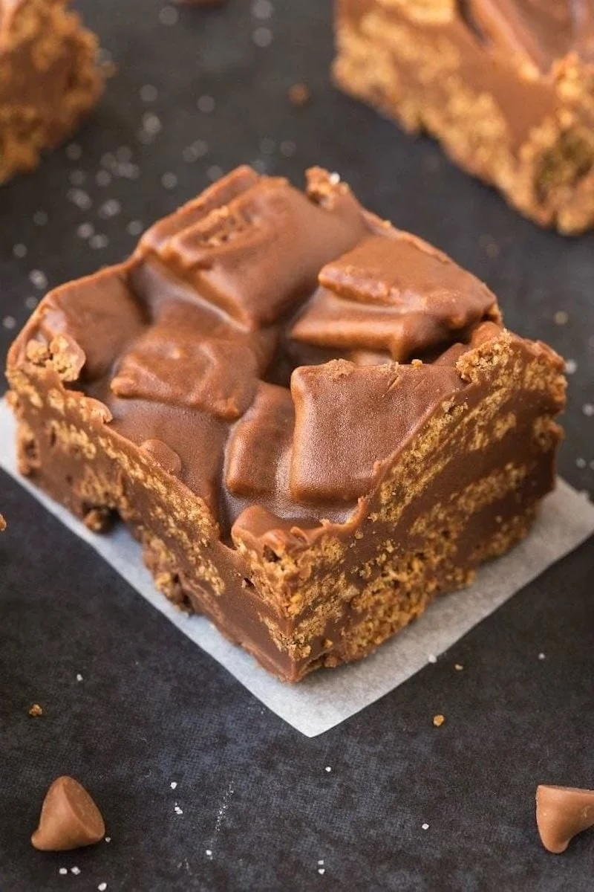

Kit Kat Bars

Description
These Kit Kat Bars just need 5 ingredients, 5 minutes and ZERO baking! These bars are a simple, healthy swap that don't compromise the classic Kit Kat flavor.
Ingredients
- Chex cereal
- Peanut butter
- Maple syrup
- Coconut oil
- Chocolate either a chopped-up chocolate bar or milk chocolate chips
Steps
- Prep. Line an 8×8-inch baking pan with parchment paper.
- Melt. Add Chex cereal to a large bowl. In a separate microwave-safe bowl or stovetop, combine all other ingredients and heat until melted. Whisk until smooth.
- Mix. Pour the chocolate mixture over the Chex and stir until combined. Pour into the baking dish and store in the fridge until firm (at least an hour). Remove and cut into bars.
Storage Instructions
- To store: Leftover bars can be stored in an airtight container at room temperature for up to two weeks or in the refrigerator for up to two months.
- To freeze: Transfer the bars to a freezer-safe bag and freeze for up to six months.